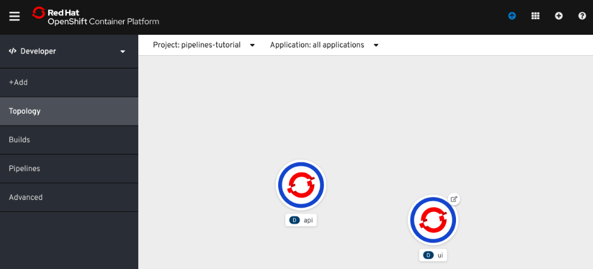
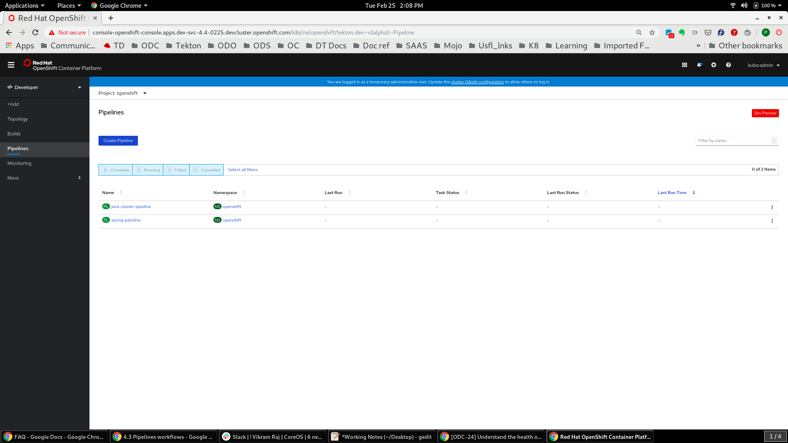
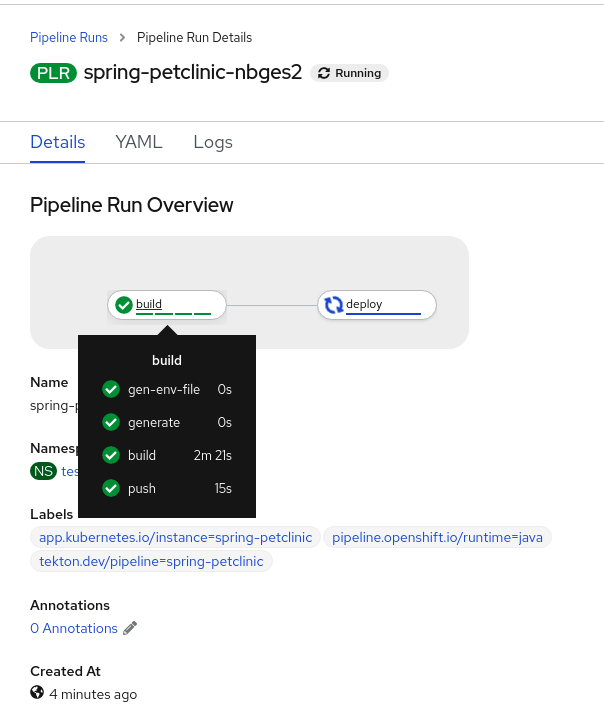

Using Pipelines
The following section demonstrates how to trigger pipelines, run them, and check on the application status using the pipeline-tutorial example.
Deploying an application to OpenShift
Prerequisites
-
You have access to OpenShift Container Platform cluster. Developers can use CodeReady Containers (CRC) to deploy a local OpenShift Container Platform cluster quickly.
-
You have installed OpenShift Pipelines using the OpenShift Pipeline Operator listed in the OpenShift OperatorHub. Once installed, it is applicable to the entire cluster.
-
You have installed the Tekton CLI.
Procedure
-
Login to your OpenShift Container Platform cluster with your login and password:
$ oc login -u <login> -p <password> https://openshift.example.com:6443
-
Create a project for the sample application:
$ oc new-project pipelines-tutorial
-
Run the following command to see the
pipelineservice account:$ oc get serviceaccount pipeline
-
In the OpenShift Web Console switch to the Developer perspective of the OpenShift Web Console.
-
Select the pipelines-tutorial project from the Project drop-down menu. On the Topology view of the Developer perspective, you will be able to see the resources of your Pipeline. The deployment at this stage is not complete. The
Pipelineyou create in the next steps builds the simple application which has a front-end and a back-end and completes the deployment.
Defining and creating pipeline tasks
Tasks are the building blocks of a Pipeline and consist of sequentially executed steps. steps are a series of commands that achieve a specific goal, for example, build an image.
Every Task runs as a pod and each step runs in its own container within the same pod. Since they run within the same pod they have access to the same volumes to cache files, configmaps, and secrets. They use inputs parameters, for example, a git , and outputs parameters, for example, an image in a registry, to interact with other tasks.
Tasks are reusable and can be used in multiple Pipelines.
Here is an example of a Maven Task with a single step to build a Maven-based Java application.
apiVersion: tekton.dev/v1alpha1
kind: Task
metadata:
name: maven-build
spec:
inputs:
resources:
- name: workspace-git
targetPath: /
type: git
steps:
- name: build
image: maven:3.6.0-jdk-8-slim
command:
- /usr/bin/mvn
args:
- install
This Task starts a pod and runs a container inside that pod using the maven:3.6.0-jdk-8-slim image to run the specified commands. It receives an input directory called workspace-git which contains the source code of the application.
Only the requirement for a git repository is declared on the Task and not a specific git repository to be used. This allows Tasks to be reusable for multiple Pipelines and purposes.
Procedure
-
Install the
apply-manifestsandupdate-deploymenttasks from the repositories, which contain a list of reusableTasksforPipelines:$ oc create -f https://raw.githubusercontent.com/openshift/pipelines-tutorial/master/pipeline/update_deployment_task.yaml $ oc create -f https://raw.githubusercontent.com/openshift/pipelines-tutorial/master/pipeline/apply_manifest_task.yaml
-
Verify the
Tasksadded to thePipelineas follows:$ tkn task ls NAME AGE apply-manifests 10 seconds ago update-deployment 4 seconds ago
-
Verify Operator installed additional tasks -
buildahands2i-python-3:$ tkn clustertask ls NAME AGE buildah 4 minutes ago buildah-v0-10-0 4 minutes ago openshift-client 4 minutes ago openshift-client-v0-10-0 4 minutes ago s2i 4 minutes ago s2i-go 4 minutes ago s2i-go-v0-10-0 4 minutes ago s2i-java-11 4 minutes ago s2i-java-11-v0-10-0 4 minutes ago s2i-java-8 4 minutes ago s2i-java-8-v0-10-0 4 minutes ago s2i-nodejs 4 minutes ago s2i-nodejs-v0-10-0 4 minutes ago s2i-perl 4 minutes ago s2i-perl-v0-10-0 4 minutes ago s2i-php 4 minutes ago s2i-php-v0-10-0 4 minutes ago s2i-python-3 4 minutes ago s2i-python-3-v0-10-0 4 minutes ago s2i-ruby 4 minutes ago s2i-ruby-v0-10-0 4 minutes ago s2i-v0-10-0 4 minutes ago
Additional resources
-
For more examples of reusable
Taskssee the Tekton Catalog and OpenShift Catalog repositories.
Defining and creating pipeline resources
Pipeline resources are artifacts that are used as inputs to a task and can be output by a task.
Procedure
After you create tasks, create pipeline resources that contain the specifics of the Git repository and the image registry to be used in the pipeline during execution as follows:
-
Create a
PipelineResourcethat defines the Git repository for the front-end application:$ tkn resource create ? Enter a name for a pipeline resource : ui-repo ? Select a resource type to create : git ? Enter a value for url : http://github.com/openshift-pipelines/vote-ui.git ? Enter a value for revision : New git resource "ui-repo" has been created
-
Create a
PipelineResourcethat defines the OpenShift internal image registry to which you want to push the front-end image:$ tkn resource create ? Enter a name for a pipeline resource : ui-image ? Select a resource type to create : image ? Enter a value for url : image-registry.openshift-image-registry.svc:5000/pipelines-tutorial/ui:latest ? Enter a value for revision : New git resource "ui-image" has been created
-
Create a
PipelineResourcethat defines the Git repository for the back-end application:$ tkn resource create ? Enter a name for a pipeline resource : api-repo ? Select a resource type to create : git ? Enter a value for url : http://github.com/openshift-pipelines/vote-api.git ? Enter a value for revision : New git resource "api-repo" has been created
-
Create a
PipelineResourcethat defines the OpenShift internal image registry to which you want to push the back-end image:$ tkn resource create ? Enter a name for a pipeline resource : api-image ? Select a resource type to create : image ? Enter a value for url : image-registry.openshift-image-registry.svc:5000/pipelines-tutorial/api:latest ? Enter a value for revision : New git resource "api-image" has been created
-
View the list of resources created:
$ tkn resource ls NAME TYPE DETAILS api-repo git url: http://github.com/openshift-pipelines/vote-api.git ui-repo git url: http://github.com/openshift-pipelines/vote-ui.git api-image image url: image-registry.openshift-image-registry.svc:5000/pipelines-tutorial/api:latest ui-image image url: image-registry.openshift-image-registry.svc:5000/pipelines-tutorial/ui:latest
Assembling a pipeline
A Pipeline represents a CI/CD flow and is defined by the Tasks to be executed. It specifies how the Tasks interact with each other and their order of execution using the inputs , outputs, and the run-After parameters. It is designed to be generic and reusable in multiple applications and environments.
In this section you will create a Pipeline that takes the source code of the application from GitHub and then builds and deploys it on OpenShift:

Procedure
-
Copy the contents of the following sample
PipelineYAML file and save it:apiVersion: tekton.dev/v1alpha1 kind: Pipeline metadata: name: build-and-deploy spec: resources: - name: api-repo type: git - name: api-image type: image - name: ui-repo type: git - name: ui-image type: image tasks: - name: build-api taskRef: name: buildah kind: ClusterTask resources: inputs: - name: source resource: api-repo outputs: - name: image resource: api-image params: - name: TLSVERIFY value: "false" - name: apply-api-manifests taskRef: name: apply-manifests resources: inputs: - name: source resource: api-repo runAfter: - build-api - name: update-api-image taskRef: name: update-deployment resources: inputs: - name: image resource: api-image params: - name: deployment value: "api" runAfter: - apply-api-manifests - name: build-ui taskRef: name: s2i-python-3 kind: ClusterTask resources: inputs: - name: source resource: ui-repo outputs: - name: image resource: ui-image params: - name: TLSVERIFY value: "false" - name: apply-ui-manifests taskRef: name: apply-manifests resources: inputs: - name: source resource: ui-repo runAfter: - build-ui - update-api-image - name: update-ui-image taskRef: name: update-deployment resources: inputs: - name: image resource: ui-image params: - name: deployment value: "ui" runAfter: - apply-ui-manifestsThis
Pipelineperforms the following tasks:-
Clones the source code of the back-end application from the
api-repoGit repository and the front-end application from theui-repo resourceGit repository. -
Builds the container image for the front-end using the
s2i-python-3task that generates a Dockerfile for the application using Source-to-Image (S2I). -
Builds the container image for the back-end using the
buildahtask that usesBuildahto build the image. -
The application image is pushed to an image registry.
-
The new application image is deployed on OpenShift using the
apply-manifestsandupdate-deploymenttasks.Pipelinesin Tekton are designed to be generic and re-usable across environments and stages through the applications lifecycle. They abstract away the specifics of the Git source repository and image registries to be used duringPipelineexecution.The execution order of the tasks is determined by the dependencies defined between the tasks using the
inputsandoutputsparameters, and the explicit orders that are defined usingrunAfter.
-
-
Create the
Pipeline:$ oc create -f https://raw.githubusercontent.com/openshift/pipelines-tutorial/master/pipeline/pipeline.yaml
-
Verify that the
Pipelinehas been added to the application as follows:$ tkn pipeline ls NAME AGE LAST RUN STARTED DURATION STATUS build-and-deploy 1 minute ago --- --- --- ---
Triggering and running a pipeline
A PipelineRun starts a Pipeline and ties it to the Git and image resources that should be used for the specific invocation.
Procedure
-
Start the
Pipelineas follows:$ tkn pipeline start build-and-deploy ? Choose the git resource to use for api-repo: api-repo (http://github.com/openshift-pipelines/vote-api.git) ? Choose the image resource to use for api-image: api-image (image-registry.openshift-image-registry.svc:5000/pipelines-tutorial/api:latest) ? Choose the git resource to use for ui-repo: ui-repo (http://github.com/openshift-pipelines/vote-ui.git) ? Choose the image resource to use for ui-image: ui-image (image-registry.openshift-image-registry.svc:5000/pipelines-tutorial/ui:latest) Pipelinerun started: build-and-deploy-run-z2rz8 Showing logs...
Starting a pipeline instantiates the
PipelineRunand creates a number of pods to execute the tasks that are defined in the pipeline. ThePipelineRunautomatically creates and triggers theTaskRunsfor eachTaskin the pipeline.Note the Pipelinerun ID returned in the command output above.
-
Track the pipelinerun progress as follows:
$ tkn pipelinerun logs <pipelinerun ID> -f -n pipelines-tutorial
-
After a few minutes, verify that the
Pipelineran successfully by listing all thePipelineRunsas follows:$ tkn pipeline list tkn pipeline list NAME AGE LAST RUN STARTED DURATION STATUS build-and-deploy 11 minutes ago build-and-deploy-run-z2rz8 5 minutes ago 5 minutes Succeeded
Checking pipeline and application status
You can examine the logs for PipelineRuns to verify its status.
Procedure
-
Check the
PipelineRunlogs as it runs using thetkn pipeline logscommand, which interactively allows you to chose the required pipelinerun and inspect the logs:$ tkn pipeline logs -f ? Select pipeline : build-and-deploy ? Select pipelinerun : build-and-deploy-run-tsv92 started 39 seconds ago
-
Check the Project Status in the OpenShift Web Console to verify that the images are successfully built and deployed.
 -
To rerun the last pipelinerun, using the same pipeline resources and service account used in the previous pipeline, use:
tkn pipeline start build-and-deploy --last
Working with Pipelines using the OpenShift Developer Perspective
After you create Pipelines using the tkn CLI or YAML files. You can visually interact with your deployed Pipelines on the Developer Perspective of the Openshift web console.
The Pipelines view in the Developer perspective lists all the pipelines in a project; the last run of the pipeline, it’s status, and the time taken for the run; and the status of the individual tasks in a pipeline run.
Prerequisites
To view your pipelines in the Pipelines view and interact with them, ensure that:
-
You have access to an OpenShift Cluster and have logged in to the web console and are in the Developer perspective.
-
You have cluster administrator privileges to install operators and have installed the OpenShift Pipelines Operator.
-
You have created a project, deployed an application, and created a pipeline for the application.
Procedure
To visually interact with the pipelines in your project:
-
In the Pipelines view of the Developer Perspective, select the project you created from the Project drop-down to see the pipelines listed in the Pipelines page.
 -
Click on the required pipeline to see the Pipeline Details page. The pipelines Overview provides a visual representation of all the serial and parallel tasks in the pipeline.

-
Click:
-
Pipeline Runs tab to see the completed, running, or failed runs for the pipeline.
-
Parameters tab to see the parameters defined in the Pipeline and add or edit additional parameters as required.
-
Resources tab to see the resources defined in the Pipeline and add or edit additional resources as required.
-
-
Click Actions on the top-right corner and select Start to see the Start Pipeline dialog box. The resources populated in the Start Pipeline dialog box are based on the pipeline definition.
-
Use the drop-downs in the Start Pipeline dialog box to select or create the required resources to customize them as required, and click Start to start the pipeline run.
-
The Pipeline Run Details page displays the pipeline being executed. You can:
-
Hover over the tasks to see the time taken for each task execution.
-
Click on a task to see logs for that particular task.
-
Click the Logs tab to see the logs as per the execution sequence of the tasks.

-
-
Click Pipelines Runs in the breadcrumb trail displayed at the top-left corner to see a list of pipeline runs for the pipeline in the Pipeline Runs page.
-
Use the filters to see the complete, running, or failed pipeline runs.
-
Use the Options menu adjacent to a pipeline run to stop a running pipeline, rerun a pipeline using the same parameters and resources as that of the previous pipeline execution, or delete a pipeline run.
-